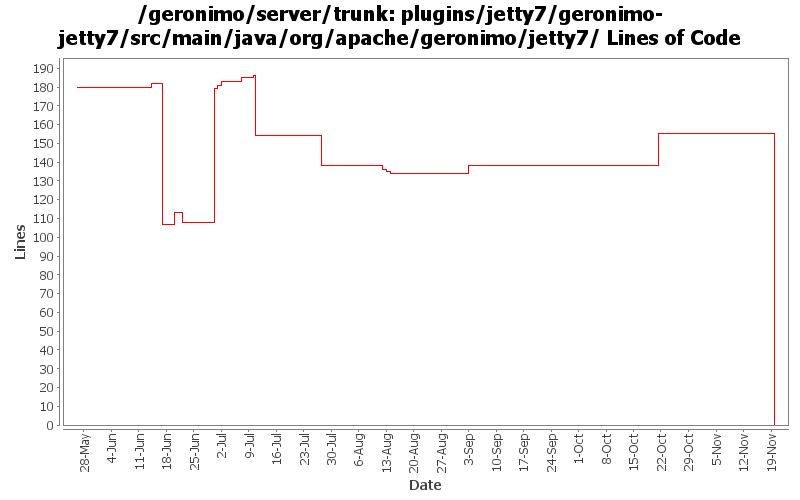

[root]/plugins/jetty7/geronimo-jetty7/src/main/java/org/apache/geronimo/jetty7
 connector
(0 files, 0 lines)
connector
(0 files, 0 lines)
 handler
(0 files, 0 lines)
handler
(0 files, 0 lines)
 security
(0 files, 0 lines)
security
(0 files, 0 lines)
 auth
(0 files, 0 lines)
auth
(0 files, 0 lines)

| Author | Changes | Lines of Code | Lines per Change |
|---|---|---|---|
| Totals | 85 (100.0%) | 260 (100.0%) | 3.0 |
| djencks | 74 (87.1%) | 211 (81.2%) | 2.8 |
| rickmcguire | 2 (2.4%) | 25 (9.6%) | 12.5 |
| xuhaihong | 5 (5.9%) | 15 (5.8%) | 3.0 |
| gawor | 3 (3.5%) | 5 (1.9%) | 1.6 |
| genspring | 1 (1.2%) | 4 (1.5%) | 4.0 |
rename jetty7 to jetty8
0 lines of code changed in 22 files:
jetty now builds
2 lines of code changed in 2 files:
Some jetty7 conversion work
25 lines of code changed in 2 files:
GERONIMO-4566 don't include jsps, welcome file processing is fixed. Update jetty7 version. Use all the release versions up for vote, so include repos for them. Use snapshot xmlbean-maven-plugin. Make more junit-4 friendly by renaming some test helper classes. Mostly merge of rev 816732 from branches/2.2
4 lines of code changed in 1 file:
GERONIMO-4742 Connector portlets for Tomcat does not work
1, Added ConnectorWrapperGBeanStarter.java to start connector GBeans for connectors defined in server.xml.
2, Added TomcatServerConfigManager.java to use DOM to read/write connectors from server.xml.
3, Modified other classes to make this happen.
4 lines of code changed in 1 file:
Upgrade to ee6 specs for servlet, ejb. Upgrade to jetty 8. Use jpa 1.0 spec labelled 1.0. Don't try to include openwebbeans until it has available snapshots
1 lines of code changed in 1 file:
GERONIMO-4659 Include web app "Display Name" in console web app portlet (Patch from Victor Fang)
2 lines of code changed in 1 file:
GERONIMO-4645 use jacc ejb ws auth for jetty6, simplify SOAPHandler interface
2 lines of code changed in 1 file:
GERONIMO-4720 remove workaround for now-fixed jetty bug
1 lines of code changed in 1 file:
GERONIMO-2622, GERONIMO-4766 Implement jacc handler data so the types dont interfere with each other. ejb and soap handlers not hooked up yet
0 lines of code changed in 1 file:
GERONIMO-4740 fix jetty run-as handling
7 lines of code changed in 5 files:
GERONIMO-4645 Make ejb ws security more jacc friendly, implement transport guarantees for jetty7 using jacc. See jira for more comments
5 lines of code changed in 2 files:
recognize CLIENT-CERT instead of CLIENTCERT
1 lines of code changed in 1 file:
prefer openejb-jar.xml instead of geronimo-openejb.xml descriptor in ejb ws deployer and pass additional properties object to SoapHandlers
2 lines of code changed in 1 file:
GERONIMO-4720 Default "headerBufferSizeBytes" 8192 is causing connector creating error (Patch from Shawn Jiang)
3 lines of code changed in 1 file:
GERONIMO-4645 Fix some of the testsuite failures. I think the remaining tests should be changed
4 lines of code changed in 1 file:
some fixes for ejb web service authentication - thing still fail but at least they deploy (GERONIMO-4645)
2 lines of code changed in 1 file:
GERONIMO-4645 reimplement ejb web service security. Also GERONIMO-4689 clean up code by renaming and moving classes.
85 lines of code changed in 9 files:
GERONIMO-4698 Jetty7 could not handle the non-existed temp path
2 lines of code changed in 1 file:
GERONIMO-4698 Jetty7 could not handle the non-existed temp path
7 lines of code changed in 1 file:
GERONIMO-4689 Cleanup code in jetty7 integration
96 lines of code changed in 24 files:
GERONIMO-4249 upgrade to current jetty snapshot, fix spec dependency, fix a problem with the wweb app not knowing where it is
5 lines of code changed in 1 file:
GERONIMO-4553 Make web use of security realms depend on plugin visibility; make console expose the 'global' attribute for configuration (renamed from 'publish'). Also merges in geronimo-security changes from sandbox branches.
0 lines of code changed in 4 files: